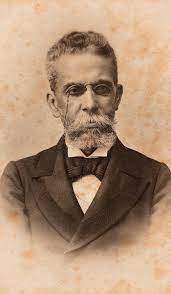

OBRAS DE MACHADO

Memórias Póstumas de Brás Cubas (1881)
Foi escrito inicialmente como um folhetim, de março a dezembro de 1881, na Revista Brasileira. Então, noano seguinte foi transformado em livro. A obra teve boa repercussão na época, já que foi escrita na fase mais madura
do autor, e por ter sido considerado o livro de transição do romantismo para o realismo.
Quincas Borba (1891)
Escrito depois de Memórias Póstumas de Brás Cubas e antes de Dom Casmurro, Quincas Borba é umdos três grandes romances da fase realista de Machado de Assis. O romance narra as desventuras do provinciano
Rubião, herdeiro do filósofo incompreendido Quincas Borba, na capital do Império.
Dom Casmurro (1899)
Romance famoso pela relação de Bentinho e Capitu, Dom Casmurro é até hoje um dos mais fascinantes estudossobre traição. Críticos como Roberto Schwarz e Susan Sontag consideram este romance de Machado como um
dos momentos mais altos da prosa ocidental do final do século XIX.